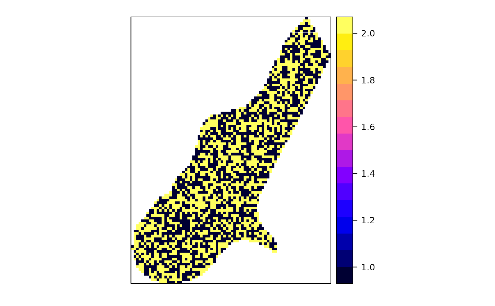

aggregate.Rdspatial aggregation of thematic information in spatial objects
object deriving from Spatial, with attributes
aggregation predicate; if by is a Spatial object,
the geometry by which attributes in x are aggregated; if by
is a list, aggregation by attribute(s), see aggregate.data.frame
aggregation function, e.g. mean; see details
arguments passed on to function FUN, unless minDimension
is specified, which is passed on to function over
logical; should, when aggregating based on attributes, the
resulting geometries be dissolved? Note that if x has class
SpatialPointsDataFrame, this returns an object of class SpatialMultiPointsDataFrame; deprecated
logical; should the aggregation of x be weighted by the
areas it intersects with each feature of by? See value; deprecated.
The aggregation of attribute values of x either over the
geometry of by by using over for spatial matching,
or by attribute values, using aggregation function FUN.
If areaWeighted is TRUE, FUN is ignored and the
area weighted mean is computed for numerical variables, or if all
attributes are factors, the area dominant factor level (area
mode) is returned. This computes the intersection of x
and by; see examples below. As this uses code from package
rgeos, it is deprecated as package rgeos will retire.
If by is missing, aggregates over all features.
For as far as these functions use package rgeos, (lines, polygons, dissolve = TRUE), they are deprecated as rgeos will retire; try using sf::aggregate instead.
FUN should be a function that takes as first argument a
vector, and that returns a single number. The canonical examples
are mean and sum. Counting features is obtained when
summing an attribute variable that has the value 1 everywhere.
data("meuse")
coordinates(meuse) <- ~x+y
data("meuse.grid")
coordinates(meuse.grid) <- ~x+y
gridded(meuse.grid) <- TRUE
i = cut(meuse.grid$dist, c(0,.25,.5,.75,1), include.lowest = TRUE)
j = sample(1:2, 3103,replace=TRUE)
x = aggregate(meuse.grid["dist"], list(i=i,j=j), mean, dissolve = FALSE)
spplot(x["j"], col.regions=bpy.colors())
